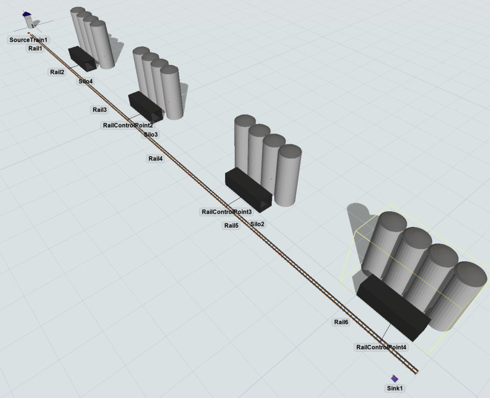
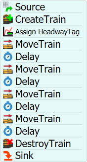
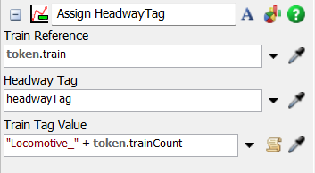
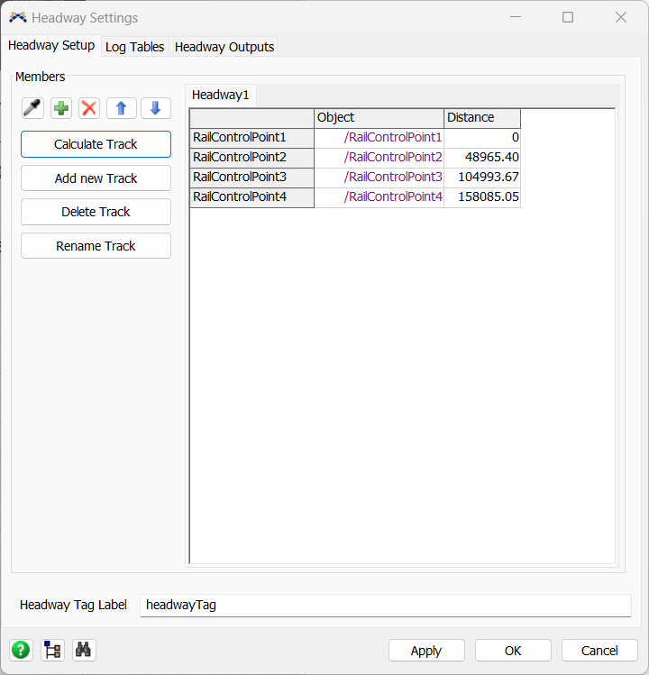
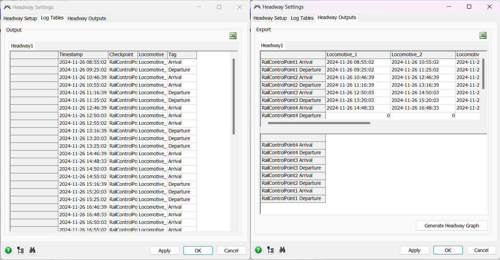

To analyze the headways that naturally arise from predefined schedules and train behaviors on a single-track railway line using FlexSim RailWorks. This study aims to identify patterns, potential bottlenecks, and efficiency metrics from the simulated operations of freight trains, especially those transporting ore.
The model below is an example of how it can be built. It is a simplified version. Feel free to build the model as you wish respecting the specifications from steps 1-3.

For this example, we will first create the single track. Considering its length, we will use the option "Virtual Distance" on the rails, removing the need to create too many objects. Therefore, create at least 6 rails. One rail to connect to the SourceTrain with size x as 10. For the rest, set the "Virtual Distance" as 40 Km (or 40000 m).
Now, we will distribute 4 RailControlPoints on the track. It can be done by creating the RailControlPoint in an empty space and then dragging on the rail in the desired position. For a better control on the distance the object will be on the rail, set the "Control Point Position" on the RailControlPoint after dragging it.
The last step is to create 4 Stations and connect them to each RailControlPoints using the S key. Considering the focus of this tutorial, it is not necessary to setup the Stations for any load or unload activities. Create a sink at the end of the track.
For the Processflow setup, the most basic flow of activities for this tutorial would be as below:

For this logic, it is important to setup the Assign HeadwayTag. First, in the Source activity, add a label naming it "trainCount" and for the value choose the "Arrival Row Number". In Assign HeadwayTag, add on the "Train Tag Value" the value ""Locomotive_" + token.trainCount". For each MoveTrain and Delay pair, set the destiny to the RailControlPoints and the time specified for load and unload process respectively.

Lastly, it is necessary to configure the Headway. For this, click on the Headway Settings in the RailSystem. On the first
tab, add the RailControlPoints by clicking on the sample or + button and click on the Calculate Track. Make sure to reset the
model before calculating the distance. The other 2 tabs will contain the Headway data collected during the simulation.
See more about the
Headway feature.

After the simulation is done, the other two tabs on the Headway Settings should be similar to the image below:

This setup leverages FlexSim RailWorks to provide a comprehensive analysis of the operational dynamics under natural headway conditions, aiming to enhance both the reliability and efficiency of freight rail services transporting ore.
Follow up questions:
Consistent headway measurements enhance operational efficiency by ensuring trains are spaced optimally, reducing delays and improving timetable adherence. Ignoring headway variability can lead to bottlenecks and increased waiting times, which disrupt service and reduce the overall efficiency of the rail network.
Strategies to adjust train frequencies based on observed headway patterns could include altering departure times, adjusting the number of trains on certain routes during peak and off-peak hours, and improving coordination at stations and junctions. If the analysis reveals frequent delays, operational changes might involve increasing passing loops, enhancing signaling systems, or even adjusting train speeds or the loading process at stations.
Infrastructure improvements at stations could include expanding track capacities, enhancing signaling and communication systems, and improving station facilities to speed up loading and unloading processes. Priority upgrades might focus on the most congested areas where delays are frequent, such as installing additional tracks at stations or expanding the size and number of passing loops.
Optimizing headways can lead to significant cost savings by improving fuel efficiency, reducing the need for additional rolling stock, and minimizing the operational costs associated with delays and disruptions. Risk management benefits include increased safety due to better-spaced trains and reduced likelihood of accidents, as well as improved service reliability that can enhance customer satisfaction and trust in the rail service.
Headway analysis provides critical data that aids in planning for increased traffic or route expansions by highlighting current capacity limits and operational inefficiencies. Challenges that might arise from scaling operations based on this analysis include the need for significant capital investment in infrastructure and the potential disruption during construction phases. However, these challenges can be addressed by phased implementation and careful planning to minimize impact on current operations.